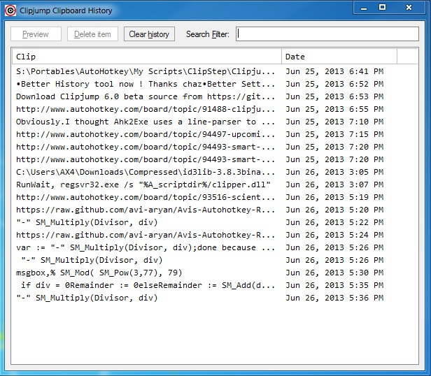

Clipjump's Clipboard History tool can be a real life saver when it's time comes.
This tool stores record of all the clipboard items transfered to Clipjump in the last "x" days. The "x" days can be selected a/c your preference from
the settings editor.
To open the Clipboard History tool , you can also use the keyboard shortcut - Win+C other than the Tray Menu shortcut.
To load full-size clip from the list provided by History tool, double-click on the item.
To delete a history item , Right-click on it and select "Delete".
Insta-Paste
Press Shift+Enter after choosing your desired Clipboard item in the history Gui to paste it directly to the underlying window.
This method necessarily closes the History GUI.
Incognito Mode
When in Incognito mode, the Clipboard history will not be captured by Clipjump. Very useful for maintaining Privacy.
To enable Incognito mode, use the Tray menu.
Tip - To view only Clipboard images in the History list, you can filter the listing with something like
[Double-click to view image]